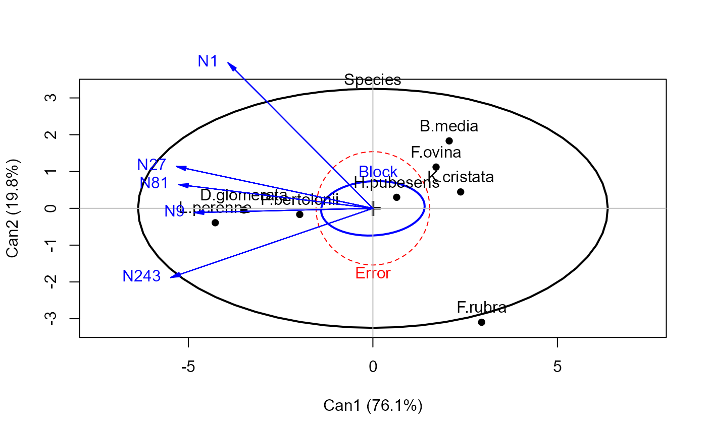
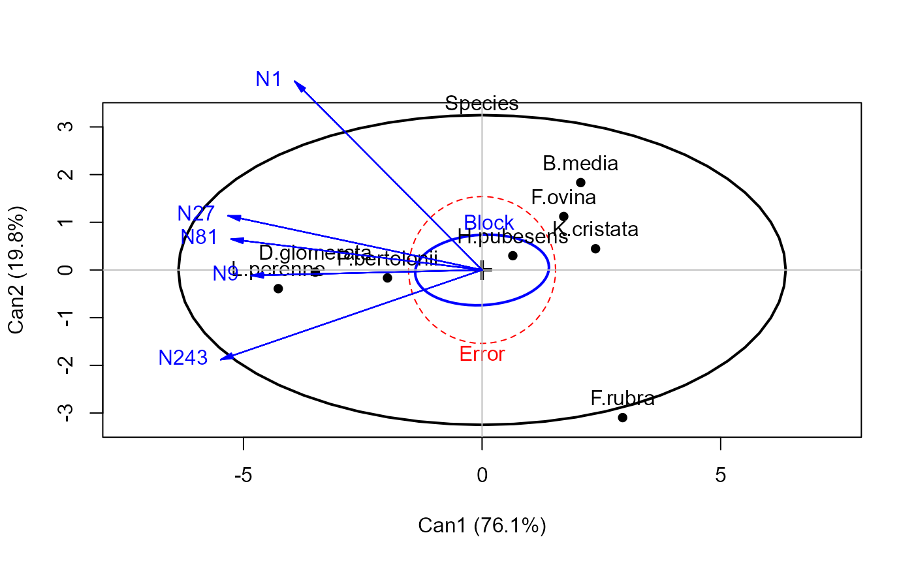

These functions plot ellipses (or ellipsoids in 3D) in canonical discriminant space representing the hypothesis and error sums-of-squares-and-products matrices for terms in a multivariate linear model. They provide a low-rank 2D (or 3D) view of the effects for that term in the space of maximum discrimination.
Arguments
- mod
A
candiscobject for one term in amlm- which
A numeric vector containing the indices of the canonical dimensions to plot.
- scale
Scale factor for the variable vectors in canonical space. If not specified, the function calculates one to make the variable vectors approximately fill the plot window.
- asp
Aspect ratio for the horizontal and vertical dimensions. The defaults,
asp=1forheplot.candiscandasp="iso"forheplot3d.candiscensure equal units on all axes, so that angles and lengths of variable vectors are interpretable. As well, the standardized canonical scores are uncorrelated, so the Error ellipse (ellipsoid) should plot as a circle (sphere) in canonical space. Forheplot3d.candisc, useasp=NULLto suppress this transformation to iso-scaled axes.- var.col
Color for variable vectors and labels
- var.labels
Labels for the variable vectors. The default is the rownames of the canonical structure coefficients.
- var.lwd
Line width for variable vectors
- var.cex
Text size for variable vector labels
- var.pos
Position(s) of variable vector labels wrt. the end point. If not specified, the labels are out-justified left and right with respect to the end points.
- rev.axes
Logical, a vector of
length(which).TRUEcauses the orientation of the canonical scores and structure coefficients to be reversed along a given axis.- prefix
Prefix for labels of canonical dimensions.
- suffix
Suffix for labels of canonical dimensions. If
suffix=TRUEthe percent of hypothesis (H) variance accounted for by each canonical dimension is added to the axis label.- terms
Terms from the original
mlmwhose H ellipses are to be plotted in canonical space. The default is the one term for which the canonical scores were computed. Ifterms=TRUE, all terms are plotted.- ...
Value
heplot.candisc returns invisibly an object of class
"heplot", with coordinates for the various hypothesis ellipses and
the error ellipse, and the limits of the horizontal and vertical axes.
Similarly, heploted.candisc returns an object of class
"heplot3d".
Details
The generalized canonical discriminant analysis for one term in a mlm
is based on the eigenvalues, \(\lambda_i\), and eigenvectors, V,
of the H and E matrices for that term. This produces uncorrelated canonical
scores which give the maximum univariate F statistics. The canonical HE plot
is then just the HE plot of the canonical scores for the given term.
For heplot3d.candisc, the default asp="iso" now gives a
geometrically correct plot, but the third dimension, CAN3, is often small.
Passing an expanded range in zlim to heplot3d
usually helps.
References
Friendly, M. (2006). Data Ellipses, HE Plots and Reduced-Rank Displays for Multivariate Linear Models: SAS Software and Examples Journal of Statistical Software, 17(6), 1-42. % https://www.jstatsoft.org/v17/i06/ doi:10.18637/jss.v017.i06
Friendly, M. (2007). HE plots for Multivariate General Linear Models. Journal of Computational and Graphical Statistics, 16(2) 421–444. http://datavis.ca/papers/jcgs-heplots.pdf, doi:10.1198/106186007X208407 .
Examples
## Pottery data, from car package
data(Pottery, package = "carData")
pottery.mod <- lm(cbind(Al, Fe, Mg, Ca, Na) ~ Site, data=Pottery)
pottery.can <-candisc(pottery.mod)
heplot(pottery.can, var.lwd=3)
 #> Vector scale factor set to 14.83312
if(requireNamespace("rgl")){
heplot3d(pottery.can, var.lwd=3, scale=10, zlim=c(-3,3), wire=FALSE)
}
# reduce example for CRAN checks time
# \donttest{
grass.mod <- lm(cbind(N1,N9,N27,N81,N243) ~ Block + Species, data=Grass)
grass.can1 <-candisc(grass.mod,term="Species")
grass.canL <-candiscList(grass.mod)
heplot(grass.can1, scale=6)
#> Vector scale factor set to 14.83312
if(requireNamespace("rgl")){
heplot3d(pottery.can, var.lwd=3, scale=10, zlim=c(-3,3), wire=FALSE)
}
# reduce example for CRAN checks time
# \donttest{
grass.mod <- lm(cbind(N1,N9,N27,N81,N243) ~ Block + Species, data=Grass)
grass.can1 <-candisc(grass.mod,term="Species")
grass.canL <-candiscList(grass.mod)
heplot(grass.can1, scale=6)
 heplot(grass.can1, scale=6, terms=TRUE)

heplot(grass.canL, terms=TRUE, ask=FALSE)
heplot(grass.can1, scale=6, terms=TRUE)

heplot(grass.canL, terms=TRUE, ask=FALSE)
 #> Vector scale factor set to 4.772952
#> Vector scale factor set to 7.150784
heplot3d(grass.can1, wire=FALSE)
#> Vector scale factor set to 5
# compare with non-iso scaling
rgl::aspect3d(x=1,y=1,z=1)
# or,
# heplot3d(grass.can1, asp=NULL)
# }
## Can't run this in example
# rgl::play3d(rgl::spin3d(axis = c(1, 0, 0), rpm = 5), duration=12)
# reduce example for CRAN checks time
# \donttest{
## FootHead data, from heplots package
library(heplots)
data(FootHead)
# use Helmert contrasts for group
contrasts(FootHead$group) <- contr.helmert
foot.mod <- lm(cbind(width, circum,front.back,eye.top,ear.top,jaw)~group, data=FootHead)
foot.can <- candisc(foot.mod)
heplot(foot.can, main="Candisc HE plot",
hypotheses=list("group.1"="group1","group.2"="group2"),
col=c("red", "blue", "green3", "green3" ), var.col="red")
#> Vector scale factor set to 8.776984
# }
#> Vector scale factor set to 4.772952
#> Vector scale factor set to 7.150784
heplot3d(grass.can1, wire=FALSE)
#> Vector scale factor set to 5
# compare with non-iso scaling
rgl::aspect3d(x=1,y=1,z=1)
# or,
# heplot3d(grass.can1, asp=NULL)
# }
## Can't run this in example
# rgl::play3d(rgl::spin3d(axis = c(1, 0, 0), rpm = 5), duration=12)
# reduce example for CRAN checks time
# \donttest{
## FootHead data, from heplots package
library(heplots)
data(FootHead)
# use Helmert contrasts for group
contrasts(FootHead$group) <- contr.helmert
foot.mod <- lm(cbind(width, circum,front.back,eye.top,ear.top,jaw)~group, data=FootHead)
foot.can <- candisc(foot.mod)
heplot(foot.can, main="Candisc HE plot",
hypotheses=list("group.1"="group1","group.2"="group2"),
col=c("red", "blue", "green3", "green3" ), var.col="red")
#> Vector scale factor set to 8.776984
# }